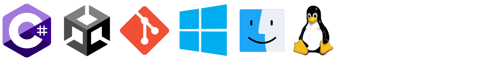

Hi, I am Yen-Lin Chen (Nickname Ian), a passionate software developer currently working at Amazon.
I am interested/specialized in:
DevOps, backend development, and cloud technologies (especially AWS)
Object-Oriented Design
Program analysis and code optimization
Unity mobile development
Some of my previous works include
Local Warfare Series and ParrelSync
- A multiplayer mobile FPS series with 5 million+ total installs,
and an open-source Unity editor extension for speeding up multi-player testing, with more than 4.8k stars as of Nov 2024 (and also recommended by Unity official!).
Education
Master of Science in Computer Science / Columbia University / 2021 - 2022
Bachelor of Science in Computer Science / National Taiwan Ocean University / 2015 — 2020
Teaching Experience
TA - COMS 4172 3D UI and AR / Columbia University / Spring 2022
TA - CSE 1062 C++ Programming / National Taiwan Ocean University / Spring 2018 & 2019
Programming Languages
- C#, Java, Typescript — Proficient
- Python — Familiar
- C++ — Advanced
- Swift — Intermediate
Mobile
Backend
- Open Search
- Docker
- REST
- Swagger
- SQL
- Node.js
- MongoDB
- Kubernetes
- Flask Framework
- AWS (Lambda, EC2, API Gateway, CloudFront, S3, RDS, Lex...etc)
- GCP (App Engine, Firebase, GCE)
- Azure (PlayFab, AKS)
DevOps
- CI/CD
- CircleCi
- AWS CloudFormation
- AWS CodeBuild
Others
- Object-Oriented Design
- Agile Methodology (Scrum)
- Unity Multiplayer Frameworks (Mirror, Photon Bolt, and PUN)
- Git
- Linux
- HTML/CSS/JavaScript
- OAuth
- MVC
Selected Experience
- Led the development of the account history system to track events related to Payee accounts, enabling real-time queries and
notifications for the partner teams and customer services when specific events occur
- Played a key role as a primary developer in an internal payee accounts migration project, successfully executing multiple highly
sensitive migration plans in collaboration with valued partner teams
- Contributed as a primary developer for an internal project focused on adding user identity verification features, empowering the
partner team to verify payee identities and mitigate fraud risks
- Mentored junior developers, guiding them in the design and implementation of test account features for Payee account
management, facilitating faster iteration for QA and the partner team during development and testing cycles
- Leveraged knowledge in Java, CDK, Typescript, React, Docker/ECS, Open Search, AWS services and multiple internal tools and
frameworks.
- Developed game mechanics with C# and Unity, utilizing OO Design to increase code reusability and flexibility, and optimization
techniques (e.g., caching, reducing GC spikes, profiling, and re-design algorithms) to resolve code performance bottlenecks
- Implemented efficient real-time multi-player utilizing Mirror framework and UDP transport, capable of handling up to 32
concurrent players smoothly even on low-end mobile devices
- Implemented account system and backend logic by integrating Azure PlayFab APIs, Google OAuth, and serverless architecture
- Deployed match-making services utilizing Docker, AWS ECS, and Kubernetes
- Optimized performance by utilizing Unity rendering technique, achieved maintaining 60 FPS even on low-end mobile devices
- Utilizing Scrum to lead and coordinate between team members, ensuring targets are completed on time
- Participated in start-up contests as representative and won multiple awards (more details in Honors & Award section)
- Leveraged knowledge in Object-Oriented Design, C#, Rest API, Git, TCP/UDP, OAuth, Serverless Architecture, Docker, AWS
ECS, Kubernetes, 3D rendering, and debugged using Android Debug Bridge, Lunar Console, Unity Profiler, and Cloud Watch
Founder, ParrelSync (GitHub)
Open-source cross platforms (Windows, macOS, Linux) Unity editor extension for multiplayer project testing; 1.7k stars as of Mar 2022.

- Recommended by Unity official doc for multiplayer project testing workflow
- Developed tools and APIs to speed up multiplayer project testing, reducing test build wait time by 70%~95%
- Moderate the open-source community by monitoring issues, Discord server, reviewing PR, and delivering updates and fixes
- Leveraged knowledge in C#, OS commands, and Unity Editor APIs
- Implemented backend services, including account authorization, cash flow, and push notifications, using Node.js and MongoDB
- Built mobile apps (Android and iOS) using Unity with multiple features, including account login, user data browsing, Bluetooth
Low Energy (BLE) data transfer with Arduino modules, in-app purchases, and push notifications
- Started working as a software engineer and earned a promotion to vice lead after four months
- Leveraged knowledge in Node.js, MongoDB, Git, Rest API, C#, Unity, C, Swagger, and Arduino IDE
Honors & Awards
• 2020 Google G-Player One, Finalist
• 2018 Beijing-Taiwan Startup Contest, "Best Startup" (2/1023)
• 2017 NCTU Seed Fund Entrepreneurial Competition, Pass the Final (top 5%)
• 2018 NTOU Innovation and Entrepreneurship Competition, Gold Award (1/91)
• 2018 Rongcheng Yuan Meng Entrepreneurship Competition, Gold Award (top 3%)
• 2018 NCTU Game Design Competition, 2nd Place Award (top 5%)
• 2018 NTOU Independent Study (Special Topic) Competition, 1st Place Award (1/24)
• 2017 NTOU Android App Competition, 1st Place Award (top 3%)
• 2015 Hsinchu Hackathon, 3rd Place Award (top 10%)
Other Selected Projects
A serverless chatbot web app providing dining suggestions,
built with Python 3.8, AWS Lambda, AWS Lex and Yelp API
An AR application allows multiple users to co-operate on prototyping the room Layout & Design in real-time
A simple web App showing Taiwan receipt lottery statistics by combining web crawler (Beautiful Soup), Visualization (Matplotlib), and Web framework (Flask)
Interactive concept demo of a new type of booth reservation system
An ios app for recording journeys (Xcode Project)

2020 Global Game Jam project - a multiplayer PVP typing game